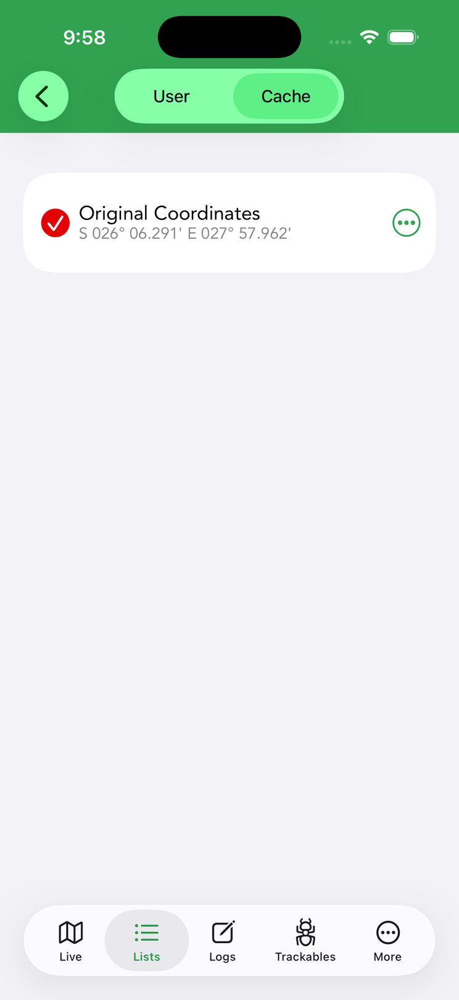
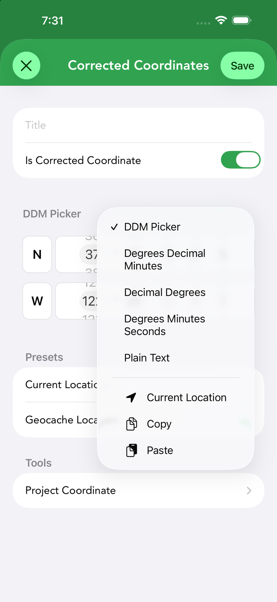

Waypoints & Coordinates
Waypoints are extra points tied to a cache — parking, trailheads, puzzle stages and your own additions. This page covers entering coordinates, the formats Cachly supports, and projecting a new coordinate from a bearing and distance.

Cache vs. user waypoints
- Cache waypoints come from the listing — parking, trailhead, reference points, and the stages of multi-caches.
- User waypoints are ones you add yourself: a solved puzzle final, a better parking spot, or where you actually found the container.
Add a user waypoint from a cache’s Waypoints section (toggle User/Cache at the top, then tap +), then enter its coordinates. Two shortcuts fill them instantly: Current Location uses your GPS position, and Geocache Location copies the cache’s own coordinates as a starting point; the cache’s code is shown for reference. Turn on Is Corrected Coordinate to make the waypoint the cache’s corrected coordinates — the spot Cachly navigates to instead of the posted location; corrected-coordinate waypoints have a fixed title, so the Title field is disabled for them. The ⋯ menu next to any waypoint offers Duplicate, Translate with Google, Copy Waypoint Text and Copy Coordinates.
Show all waypoints on the map
Cachly can show every waypoint of every cache in a list at once. When enabled, tapping a waypoint on the map opens a callout with its details and draws a line back to its parent cache, so you can see at a glance which cache a stage or parking spot belongs to. For live lists this requires full cache data (Settings › Caches & Waypoints › Full Cache Data); offline lists already have it, and an Offline Lists Only option can limit the display to offline lists.
Waypoint types & pins
Each cache waypoint carries a type that sets its map pin; your own user waypoints are shown in blue and can be tapped to read their description. When a cache has more than one waypoint of a kind, its pin adds a small bar with the waypoint number — P0, P1 for multiple parking waypoints, for example.
- Parking
- Trailhead
- Reference Point
- Final Location
- Physical Stage
- Virtual Stage
Coordinate formats

The same point can be written several ways. Cachly’s coordinate picker offers five input formats, switchable any time from the ⋯ menu — your choice is remembered for next time:
| Format | Example | Notes |
|---|---|---|
| Degrees Decimal Minutes (DDM) | N 45° 54.595’ | The geocaching standard, used by Geocaching.com and GPS units. Cachly’s default. Type the degrees, then the decimal minutes (to 1/1000). |
| Decimal Degrees (DD) | 45.90992 | A single signed number per axis; compact and used by many web mapping tools. |
| Degrees Minutes Seconds (DMS) | N 45° 54’ 35.70” | Common on traditional maps. Seconds go to 1/100. |
| DDM Picker | spinning wheels | The classic scroll-wheel entry for degrees, whole minutes and decimal minutes — tactile, no keyboard. |
| Plain Text | paste anything | One free-text field: paste a coordinate in almost any format (DDM, DMS or DD) and Cachly parses it. The baseline value is shown beneath for comparison, and unreadable text is flagged in red. |
Your default display format is also set in Settings.
Entering coordinates
The picker keeps entry fast and unambiguous. In the standard DDM layout you set the hemisphere (N/S, E/W) with a tap, type the whole degrees, then type the decimal minutes yourself — so the decimal point lands exactly where you mean it. As soon as you change a value from where it started, a red Updated badge appears next to the format label so you can see at a glance that you’ve edited the coordinate. The ⋯ menu offers Reset Coordinates, which returns every field to the value the picker opened with. If you don’t touch anything, saving keeps the original coordinate at full precision — it isn’t round-tripped through the display format.
Coordinate projection
Many puzzle and multi-caches give you a starting point plus a bearing and distance (“go 120° for 80 m”). Cachly’s projection tool calculates the destination for you. It takes exactly three inputs:
- A starting coordinate — the current waypoint, or tap Current Location to project from where you are.
- A direction in degrees relative to North.
- A distance with a selectable unit: meters, kilometers, feet or miles.
Cachly shows the resulting coordinate so you can review it before tapping Done to apply it as a waypoint. The sheet also has a scratch pad field for pasting the raw bearing-and-distance text from a puzzle; it’s a working area only and isn’t saved with the waypoint.
Project Waypoint ────────────────────────── Start N 45 54.595 W 122 29.070 Direction [ 120 ] ° Distance [ 80 ] [ Meters ▾ ] ────────────────────────── Result N 45 54.618 W 122 29.014 [Done]
Saving a location
Cachly can save locations — coordinates you want to keep handy (a parking spot, a campsite, a search center). Saved locations can be reused as search centers or starting points for projection.